2021 club tournaments
12 tournaments with results. Pick a date for the full result.
Season standings
2021 CCBM Tournament Results and Standings
Tournament Rules Tournament Rules
Angler of the year: Paul Sirochman !!
rider of the year: ryan Sweeney!!
Rookie of the year: Bob Donaldson !!
2021 Tournament Schedule
April 17 - Nanticoke River
May 8 - Sassafras River
May 29 - North East River
June 5 - Wicomico River
June 26 - North East River
July 24 - Nanticoke River
August 7 - Marshyhope River
August 21 - Nanticoke River
September 11 - North East River
September 18 - North East River
October 9 - Nanticoke River
October 23 - Conowingo Reservoir
CCBM Classic: November 6, Nanticoke River November 7, North East River
2021 Aoy Standings
Best 7 tournament results shown
* 2020 Angler of the Year!!!
2021 Club Tournament Results
CCBM Tournament #1
April 17, 2021
Nanticoke River - Seaford Ramp
Chester County Bass Masters held their Season opener today on the Nanticoke river. A chilly windy day meets our members at the ramp trying to crush the mood of the 24 anglers who showed up in hopes of setting the hook on some bass for the first time in 2021.
With over 80% of our anglers weighing in fish, you can say: Anglers 1 - 0 Weather.
CCBM Veteran's take the top 2 spots as the 2020 CCBM Rookie of the year continues to impress!
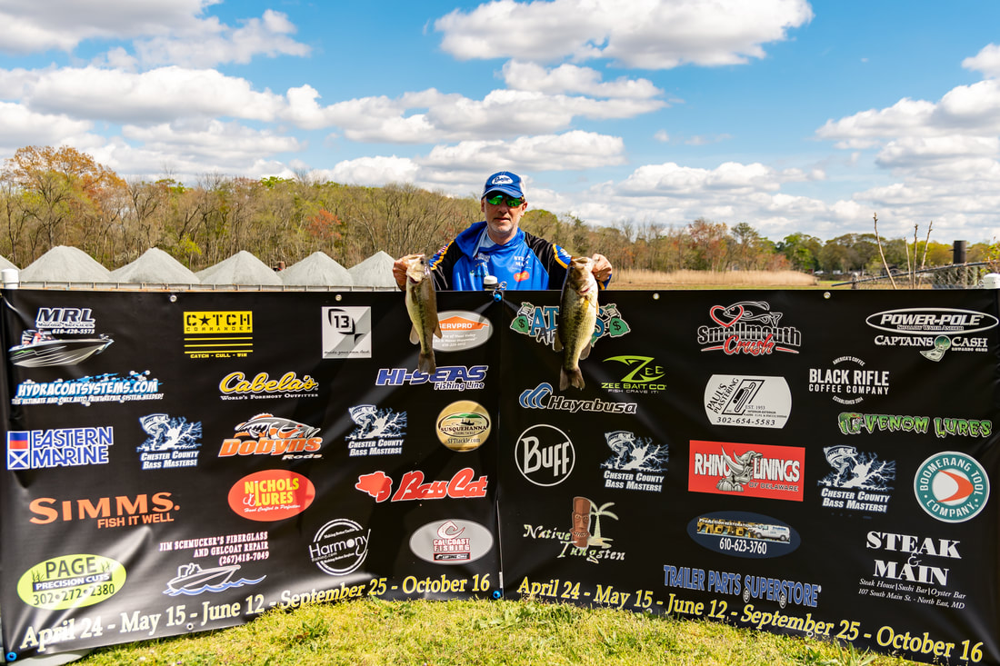
In 2020 Lou Croce finished in a tie for 6th in AOY standings. He looks to get out to a fast start in 2021 and sure does.
After finding some good fish in practice he was able to get them to bite on Money Day! His limit goes 10.80 lbs which beats the next closest angler by more than 3 lbs. He also claims the Lunker of the day to go with the win with a 3.90 lb slob.
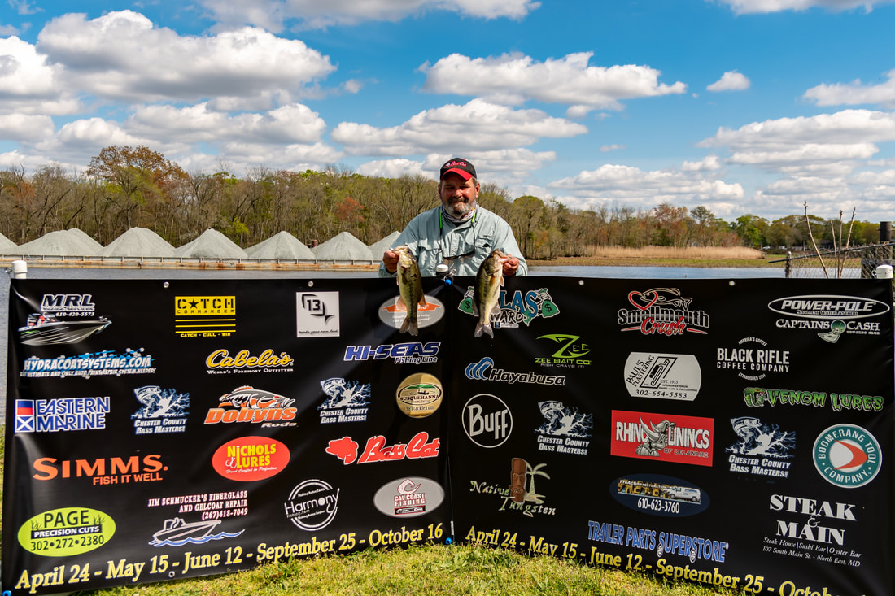
Second place went to George Waeckel
who loaded the boat with keeper after keeper all day long to put together a solid limit that weighed 7.53 lbs. With a strong start to the season, George is looking to stay in the top 6 for 2021.
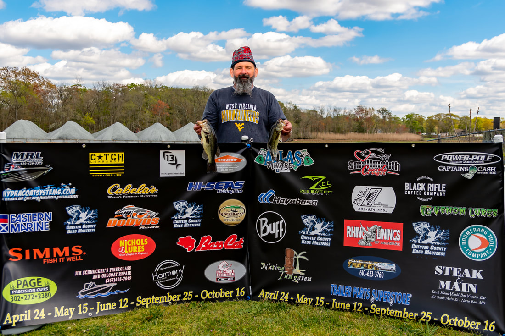
Third place was taken by Paul Sirochman. Finishing in 3rd, Paul picks up where he left off in 2020, taking a top 3 AOY finish in his rookie year with CCBM.
Paul's weight was 7.39 lbs , which left him just shy of 2nd place. Paul and "The Tank" could be a threat to any fishing against him in 2021.
April 17, 2021
Nanticoke River
- Participants: 24
- Fish Weight: 84.83
- Fish Weighed: 50
- Fish Released: 50 (100%)
- Fish Weight: 1.70
- #Fish/Angler: 2.08
- Wgt/ Angler: 3.53
Total
Total
Total
Total
Avg,
Avg
Avg
CCBM Tournament #2
May 8, 2021
Sassafras River, MD
Chester County Bass Masters held their 2nd club tournament of the 2021 season May 8th out of Duffy's Marine on the Sassafras River, Georgetown, Maryland.
Weather was cold at launch, around 42 degrees, partly cloudy, with a high for the day around 57 for weigh in.
Cold fronts during the week leading to the TX had dropped water temps about 4 - 5 degrees. Wind was 10 - 20 thru out the day.
Wind picked up with a storm rolling in right at the end of the day with Lightning and Hail.
25 club members fished the tournament. A few boats had to drop at the last minute due to mechanical problems and one had to leave early with TM issues.
It was a Sassafras River-only tournament.
15" limit.
The club launched at 6:15 and the TX ended at 2:30.
High tide was around 8:00 am in Betterton with falling water thru the end of the TX.
18 members weighed in fish.
41 keepers were caught and released alive.
Catching was tough with most anglers only getting a few bites with the cold front. No limits were weighed in and only 2 people had 4 fish.
Sean Geerlof took first place with 4 bass going 11.08 pounds. Congrats to Sean on a really tough day !
Bookend wins for Him as He also won our last TX of 2020 season on the Sass !
Second place went to Adam Harness off the back of the boat !
Adam brought 4 fish to weigh in that tipped the scales at 10.05 pounds. The 96 points will help him in in the AOY standings.
Third place was taken by Bob Donaldson with 3 fish for 10.01 pounds good for 93 points in AOY standings. Bob just missed 2nd by 4 hundredths of an ounce. His big bass weighed in at 4.32 Lbs.
Fourth place and 91 points was taken by Lou Croce , with 3 fish for 9.94 Lbs. good for 91 AOY points.
Fifth position was grabbed by Steve Zisk with 3 fish for 9.63 Lbs. The 90 points will push him up in AOY points. Steve's big fish went 4.15 Lbs.
Sixth spot and 89 AOY points went to rookie Jason Bailey with 2 bass for 8.84 Lbs.
They were the right ones though as He took home the TX Lunker cash with a 5.50 Sass giant and also hit the club's Rolling Lunker Pot for another nice payday !
Seventh place was taken by Tom Wood with 2 fish for 7.62 Lbs and 88 AOY points. Tom's big fish went 4.38 Lbs.
May 8, 2021
Sassafras River
- Participants: 27
- Fish Weight: 122.56
- Fish Weighed: 42
- Fish Released: 42
- Fish Weight: 2.92
- #Fish/Participant: 1.62
- Weight / Participant: 4.71
Total
Total
Total
Total
Average
Average
Average
CCBM Tournament #3
June 5, 2021
Wicomico River
Chester County Bass Masters held their 3rd club tournament of the 2021 season June 5th out of Riverside Ramp on the Wicomico River in Salisbury Maryland ( May 29th TX was moved out )
Weather was hot at launch, around 70 degrees going up to 90 with no cloud cover and very little breeze.
22 club members plus one guest fished the tournament.
15" limit.
The club launched at 5:45 and the TX ended at 2:30.
Low tide was 7am with high around 1 pm.
10 members weighed in fish.
16 keepers were caught and released alive.
Catching 15" keepers was tough; there were reports of plenty of 14+ inch bass being caught. No limits were weighed in and only 2 people had 3 fish.
Ryan Sweeney won off the back of the boat to take home his first ever CCBM tournament win !
Ryan took first place with 3 bass going 7.39 pounds. His big fish weighed in at 2.52 lbs.
Congrats to Ryan on a really tough day !
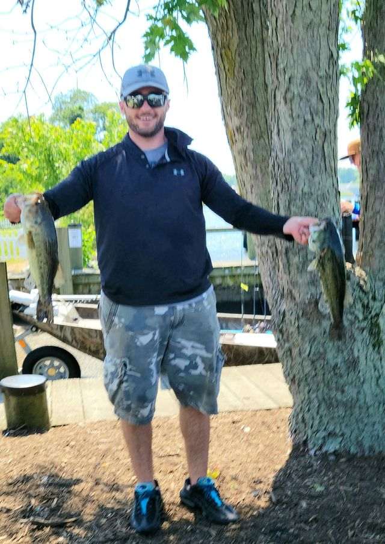
Second place went to James " Woo " Hauck.
Woo brought in 2 fish that tipped the scales at 6.43 pounds.
Jimmy also had the tournament lunker, a Wicomico giant at 4.52 lbs.
The 96 points will help him in in the AOY standings.
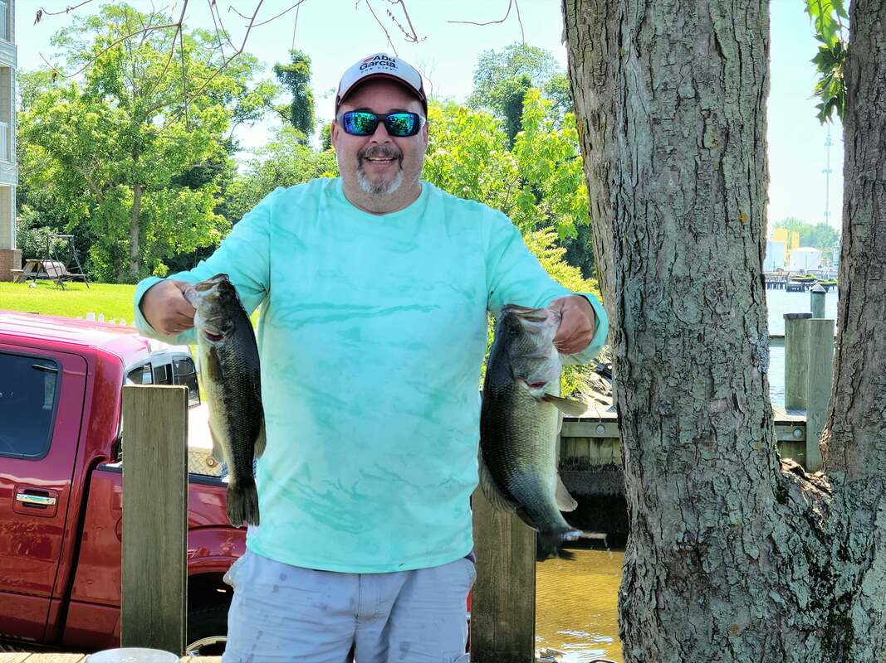
Third place was taken by the local favorite Adam Harkness with 3 fish for 5.47 pounds good for 93 points in AOY standings. His big bass weighed in at 2.30 Lbs.
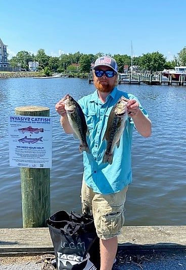
Fourth place and 91 points was taken by Tom Wood with 2 fish for 5.38 Lbs..
Fifth position was grabbed by Greg Arrowood with 1 fish for 3.16 Lbs. The 90 points will push him up in AOY points.
Sixth spot and 89 AOY points went to Steve Manista with 1 bass for 2.83 Lbs.
Seventh place was taken by Paul Sirochman with 1 fish for 2.14 Lbs and 88 AOY points.
June 5, 2021
Wicomico River
- Participants: 24
- Fish Weight: 43.10
- Fish Weighed: 18
- Fish Released: 17
- Fish Weight: 2.39
- #Fish/Participant: 0.75
- Weight / Participant: 1.80
Total
Total
Total
Total
Average
Average
Average
CCBM Tournament #4
June 26, 2021
North East River
Chester County Bass Masters held their 4th club tournament of the 2021 season June 26th out of Anchor Marine on the Northeast River.
Weather was hot and humid at launch, around 70 degrees going up to 90 with some light rain in the early morning followed by a steady 15 mph wind with gusts to 20+.
25 club members plus one guest fished the tournament.
The club launched at 5:30 and the TX ended at 2:30.
Low tide was 6 am with high around 12:30 pm
23 members plus 1 guest weighed in fish.
75 keepers were caught for 180 pounds.
Steve Manista won his first TX in his new-to-him Bass Cat with a great limit weighing in at 19.68 Lbs.
TX Lunker also went to Steve with a hefty 5.05 largemouth to anchor his winning bag.
Congrats to Steve on a fantastic day !
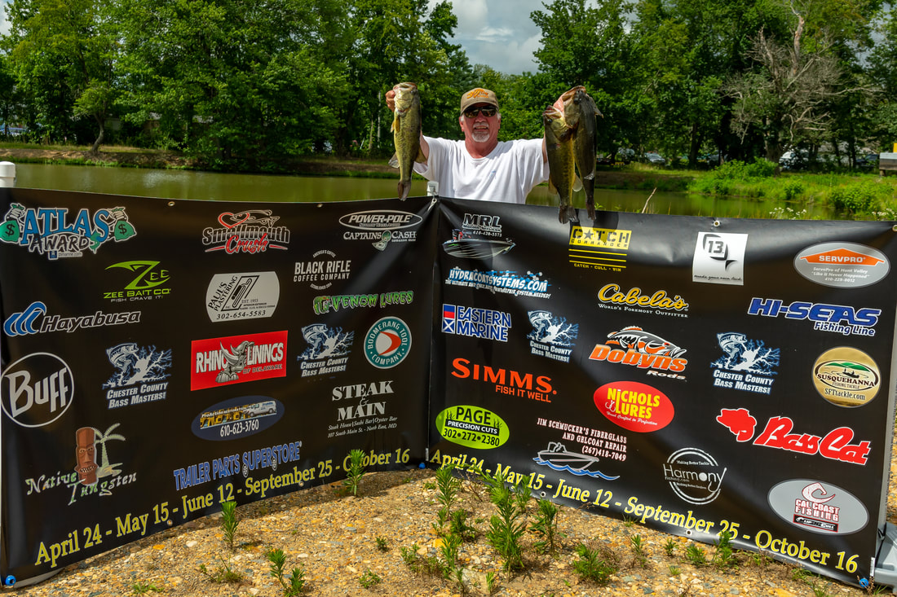
Second place went to Lou Croce with a limit of bass for 14.78 Lbs and a big fish of 4.91 Lbs.
The 96 points will get him in at 3rd place in the CCBM AOY standings.
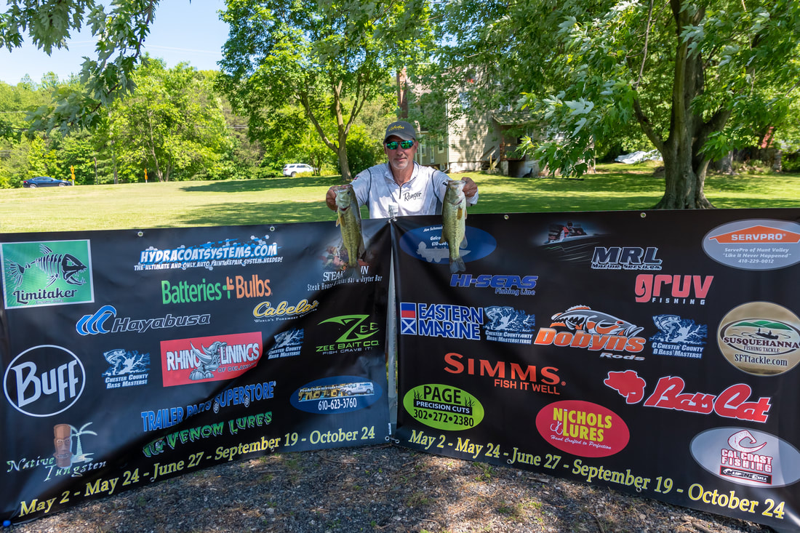
Third place was taken by Tom Wood with 5 fish at 14.25 Lbs and a big fish of 3.94 Lbs.
His 93 points earned will push him into first place in AOY standings.
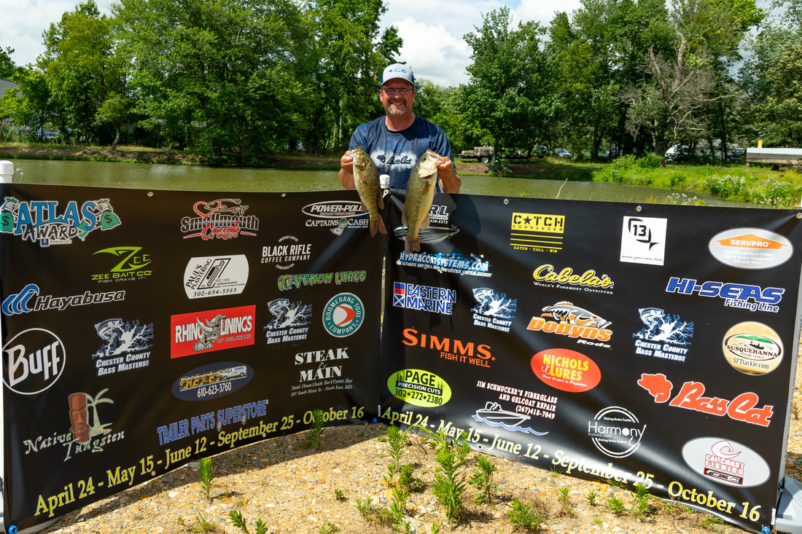
Fourth place and 91 points was taken by Ryan Sweeney off the back of the boat. Fresh off a win at the Wicomico River, Ryan backs it up with a 5 fish limit for 13.52 Lbs Lbs.
The 91 points will push him up the AOY board, with one TX less than the leaders, he'll move into one of the top spots once he gets enough TXs in.
___________
Fifth position was grabbed by Paul Sirochman with 4 fish for 9.03 Lbs.
The 90 points will push him up into 5th place in AOY points.
___________
Sixth spot and 89 AOY points went to another angler fishing off the back deck.
Wes Johnson brought 4 bass to the scales for 8.64 Lbs.
___________
Seventh place was taken by George Waeckel with 4 fish for 8.30 Lbs and 88 AOY points.
June 26, 2021
North East River
- Participants: 26
- Fish Weight: 179.28
- Fish Weighed: 75
- Fish Released: 72
- Fish Weight: 2.39
- #Fish/Participant: 2.88
- Weight / Participant: 6.90
Total
Total
Total
Total
Average
Average
Average
CCBM Tournament #5
July 24 , 2021
Nanticoke River
Weather was nice at launch, around 70 degrees going up to 90 with a bluebird sky.
Water temp was 78 - 80.
23 club members plus 2 guests fished the tournament.
The club launched at 5:30 and the TX ended at 2:30.
High tide was 6 am with low around Noon.
76 keepers, 98 pounds of largemouth were caught and released alive.
CCBM next club TX will be on August 7th on the Marshyhope River in Federalsburg, Maryland.
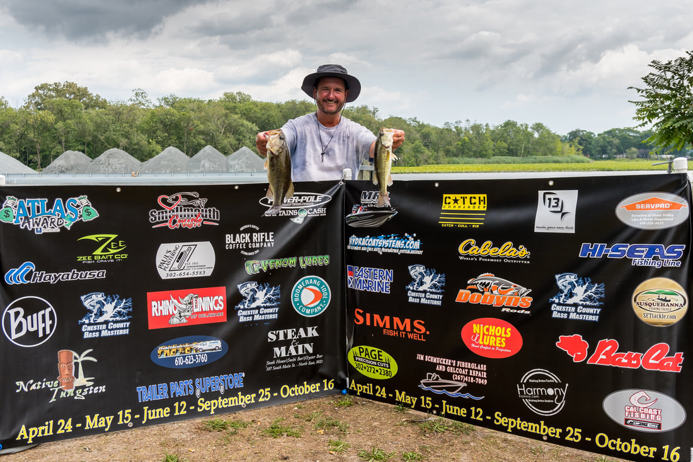
Paul Sirochman won with a limit weighing in at 9.46 Lbs.
TX Lunker also went to Paul with a hefty 3.61 largemouth to anchor his winning bag.
Congrats to Paul on a fantastic day !
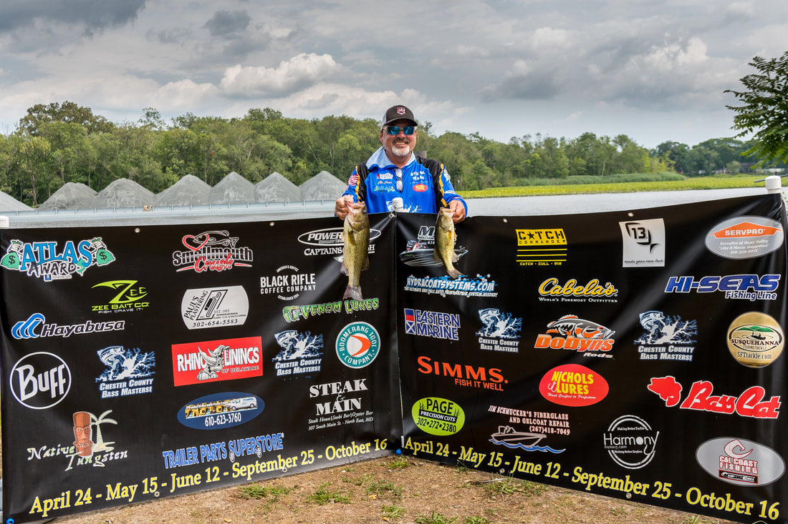
Second place went to Ken Jester with a limit of bass for 8.92 Lbs and a big fish of 3.38 Lbs.
The 96 points will push him up the CCBM AOY standings.
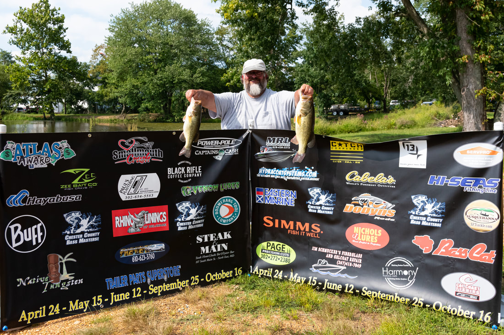
Third place was taken by Sean Geerlof with 5 fish at 7.22 Lbs
His 93 points earned will push him into the top 10 in AOY standings.
July 24, 2021
Nanticoke River
- Participants: 25
- Fish Weight: 105.05
- Fish Weighed: 76
- Fish Released: 76
- Fish Weight: 1.38
- #Fish/Angler: 3.04
- Wgt/ Angler: 4.20
Total
Total
Total
Total
Avg,
Avg
Avg
CCBM Tournament #6
August 7 , 2021
Marshyhope River
Chester County Bass Masters held their 6th club tournament of the 2021 season August 7th on the
Marshyhope River in Federalsburg, Maryland
Weather was nice at launch, around 65 degrees going up to 85.
Cloud cover at launch turned into a steady rain around 10:00 that lasted all day.
Water temp was 78 - 80.
20 club members fished the tournament.
The club launched at 6:00 and the TX ended at 2:30.
High tide was 6 am with low around noon.
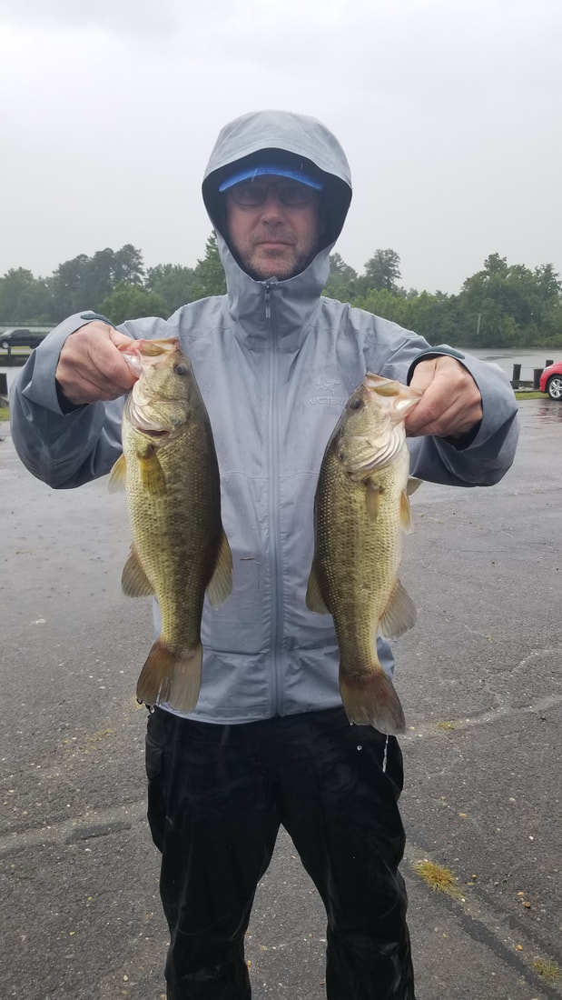
Steve Weimar won with a limit weighing in at 9.37 lb and a big fish of 2.23 lb.
The 100 points will really help him towards the AOY race.
Congrats to Steve on a great day in trying weather !
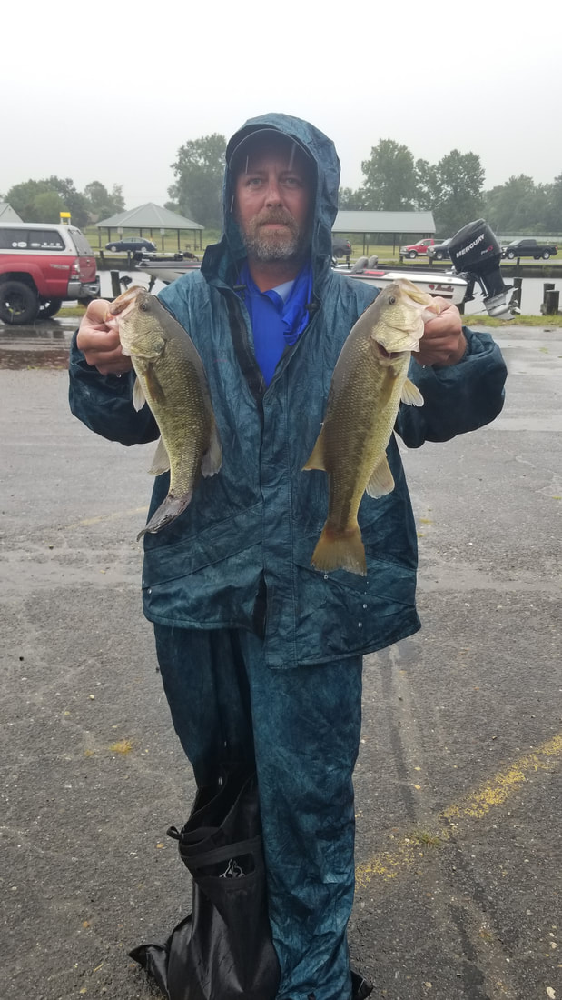
Second place went to Bob Donaldson with a limit of bass for 9.15 lb and a big fish of 2.62 lb.
The 96 points will push him up the CCBM AOY standings
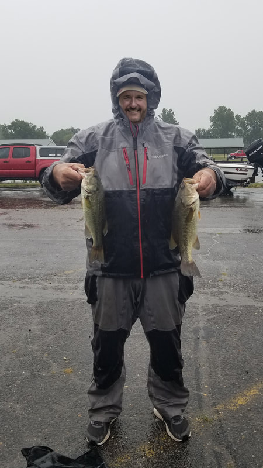
Third place was taken by Paul Sirochman with 5 fish at 7.16 lb.
His 93 points earned will push him into the top 5 in AOY standings.
August 7, 2021
Marshyhope River
- Participants: 20
- Fish Weight: 58.49
- Fish Weighed: 38
- Fish Released: 38
- Fish Weight: 1.54
- #Fish/Angler: 1.90
- Wgt/ Angler: 2.92
Total
Total
Total
Total
Avg,
Avg
Avg
CCBM Tournament #7
August 21 , 2021
Nanticoke River
Chester County Bass Masters held their 7th club tournament of the 2021 season August 7th on the Nanticoke River
out of Seaford, Delaware.
Weather was overcast at launch with rain and thunderstorms predicted late morning, air temps around 65
degrees going up to 85. Water temp was 78 - 80.
21 club members fished the tournament.
The club launched at 6:00 and the TX ended at 2:30.
High tide was 6 am with low around noon.
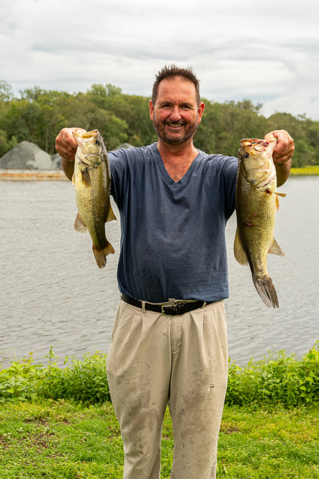
Paul Sirochman won with a 5-fish limit weighing in at 11.08 lb.
The Tournament Lunker also went to Paul with a hefty 3.84 largemouth.
The 100 points will keep him on top of the AOY race.
Congrats to Paul on a great day !
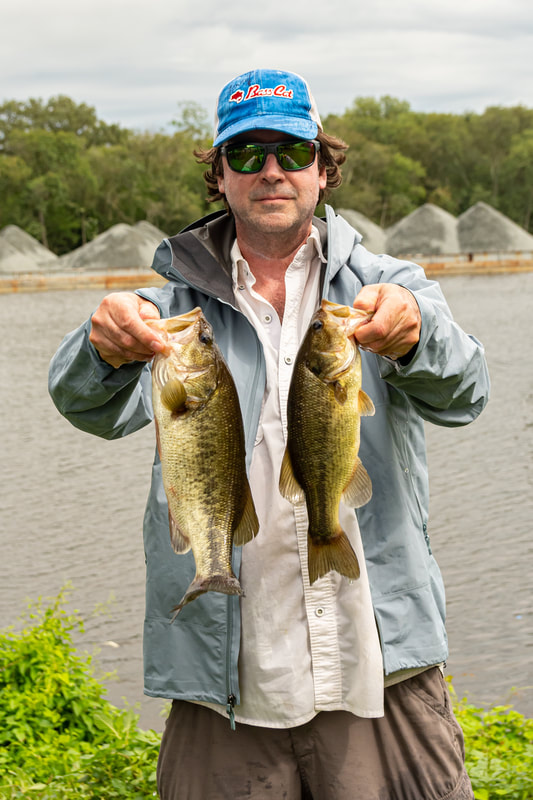
Second place went to Steve Weimar with a limit of bass for 8.38 lb.
The 96 points will push him up the CCBM AOY standings into 2nd place.

Third place was taken by Steve Manista with 5 fish at 8.19 lb.
His 93 points earned will keep him moving up AOY standings.
August 21, 2021
Nanticoke River
- Participants: 21
- Fish Weight: 111.92
- Fish Weighed: 73
- Fish Released: 72
- Fish Weight: 1.53
- #Fish/Angler: 3.48
- Wgt/ Angler: 5.33
Total
Total
Total
Total
Avg,
Avg
Avg
CCBM Tournament #8
September 11 , 2021
North East River
One time rider makes a big move with a big win while others mostly struggled!
One angler has a great day catching big fish and recording his first 2nd place finish!
Last year's runner up in AOY vaults himself back into AOY 2nd place with a 3rd place tx finish on a tough day!
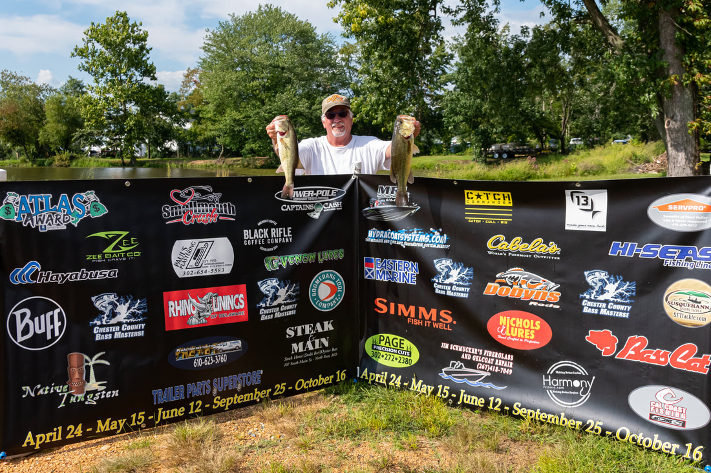
Steve Manista has been in the middle of the field for the AOY race, mostly due to the fact that
he missed a few tournaments. We count your top 7 tx results and he now has 6. So we can see a big jump after
the Sept 18th tx. On this day Steve made the right decisions. Catching only 4 fish left him thinking he was out of
luck for the win but takes it home. His 4 fish weigh in at 9.94 lb.

Nick Biondi takes home a strong 2nd place fish after having a great day on the water! He weighed in
3 fish for a strong bag that weighs in at 9.43 lb which included a 5.23 lb SLOB! Nick takes his first 2nd place
finish to pair up with his previous best finish of a 3rd place, Nick now has his eye set on the win for the
trifecta. It's not a question of if, just when. Go Nick!
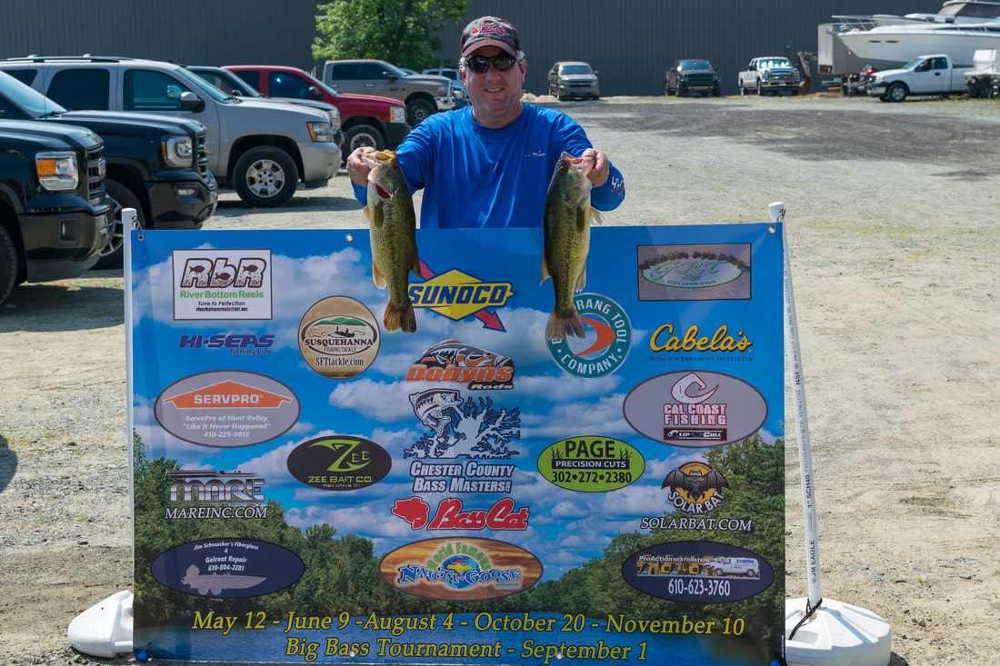
3rd place goes to Sean Geerlof after weighing in only 2 fish but they were solid fish. Sean weighs in 6.12 lbs
and moves up to 2nd place in the AOY race.
September 11, 2021
North East River
- Participants: 21
- Fish Weight: 54.50
- Fish Weighed: 26
- Fish Released: 26
- Fish Weight: 2.10
- #Fish/Angler: 1.24
- Wgt/ Angler: 2.60
Total
Total
Total
Total
Avg,
Avg
Avg
CCBM Tournament #9
September 18 , 2021
North East River
AOY race has really tightened up after 2020 Rookie of the year takes his 3rd win of the season. The 2019 AOY is
quietly moving up the leaderboard after taking 2nd place for the 2nd time this season. 3rd place goes to our
TD as he directs his way in a late run for his first AOY title.

Paul Sirochman has really been hot and has himself in contention to win his first AOY in just his 2nd season.
In 2020 he finished just outside of 2nd but has taken his 2021 season to the next level.
Paul's limit weighs in at 13.16 lb and was anchored by a solid 4.66 lb Largemouth which gives him the win
and Lunker honors!
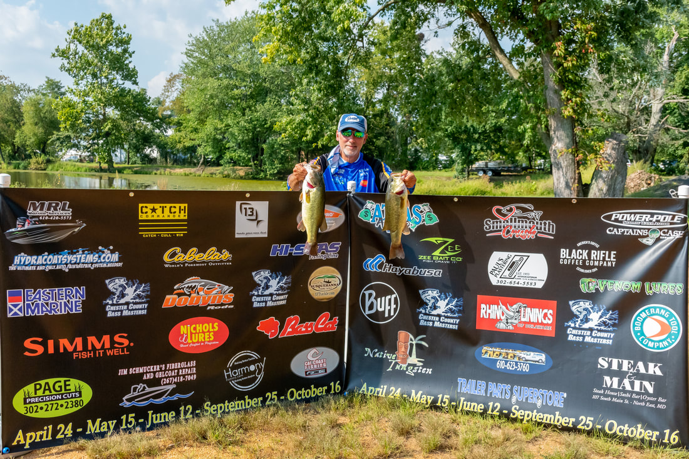
Lou Croce says don't forget about me!! Lou has been quietly accumulating points and is in prime position
to fight for AOY! He has only 6 tournaments counted towards AOY but we count 7. There is a chance he takes
the AOY lead after the next tx with a win. On this day he takes 2nd place with a bag that weighs 10.42 lb!
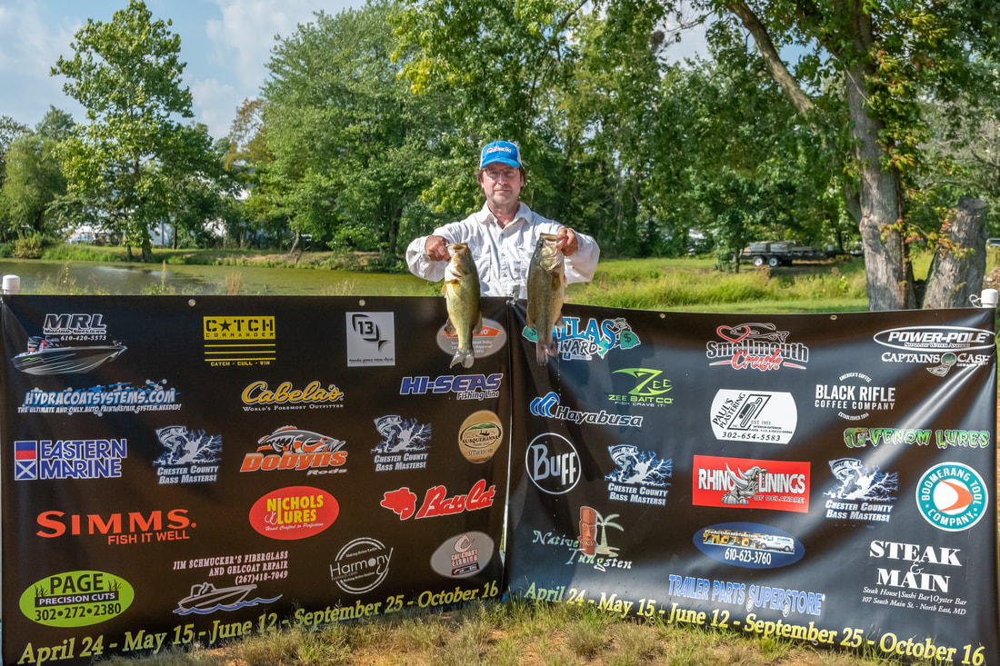
What a 2nd half of the season Steve Weimar is having! He has placed in the top 3 in 3 of the last 4 txs and
battling for the AOY spot with several other guys. Steve's bag weighs in at 8.21 lbs with a kicker fish that weighed
4.62 lbs but falls .04lbs shy of the day's big fish.
September 18, 2021
North East River
- Participants: 19
- Fish Weight: 62.34
- Fish Weighed: 27
- Fish Released: 27
- Fish Weight: 2.31
- #Fish/Angler: 1.42
- Wgt/ Angler: 3.28
Total
Total
Total
Total
Avg,
Avg
Avg
CCBM Tournament #10
October 9 , 2021
Nanticoke River
After falling just shy of a win on the North East River in October of 2016 this angler seals the deal with his first win!
Next angler is on a roll with his 6th top 3 finish this year as he keeps all other anglers in chase mode for AOY title.
3 time AOY says sometimes "I would rather be lucky than good" and it paid off on this day.
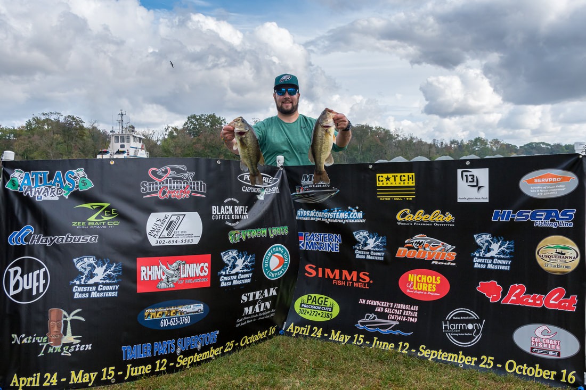
Dave Curci had his first win within reach back in 2016 but some Sandbagger ripped it away at
the last second. This time he loads the boat for his first win while weighing in the 2nd largest bag
ever by a rider on the Nanticoke River and 10th largest in the history of the club on
the same body of water.
Dave's bag weighs in at 10.49 lb and slips by the next closest angler by .03 lb!!!
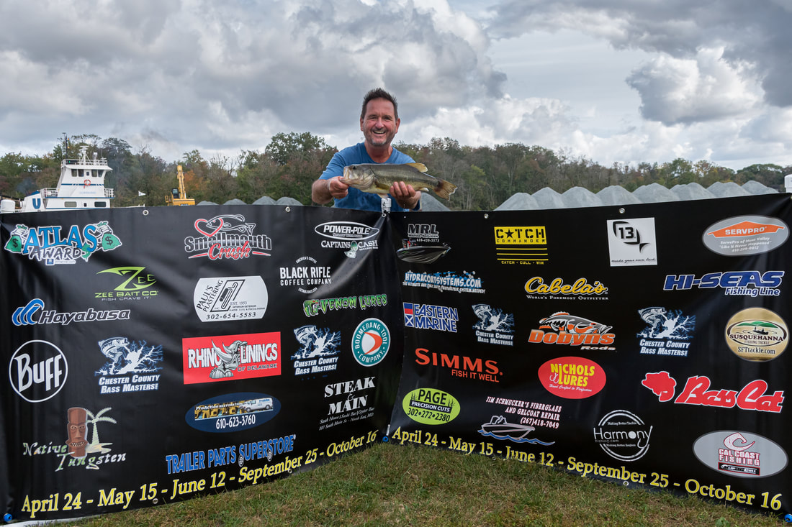
Paul Sirochman is taking his 2020 campaign and stepping it up a notch. Taking his 6th top 3 finish
of the 2021 season has made him almost out of reach for any other angler to catch him for the AOY Title! He can seal the deal with a top 10 finish on the Conowingo this weekend.
Pauls bag weighed in at 10.46 lb, just .03bs shy of the win!
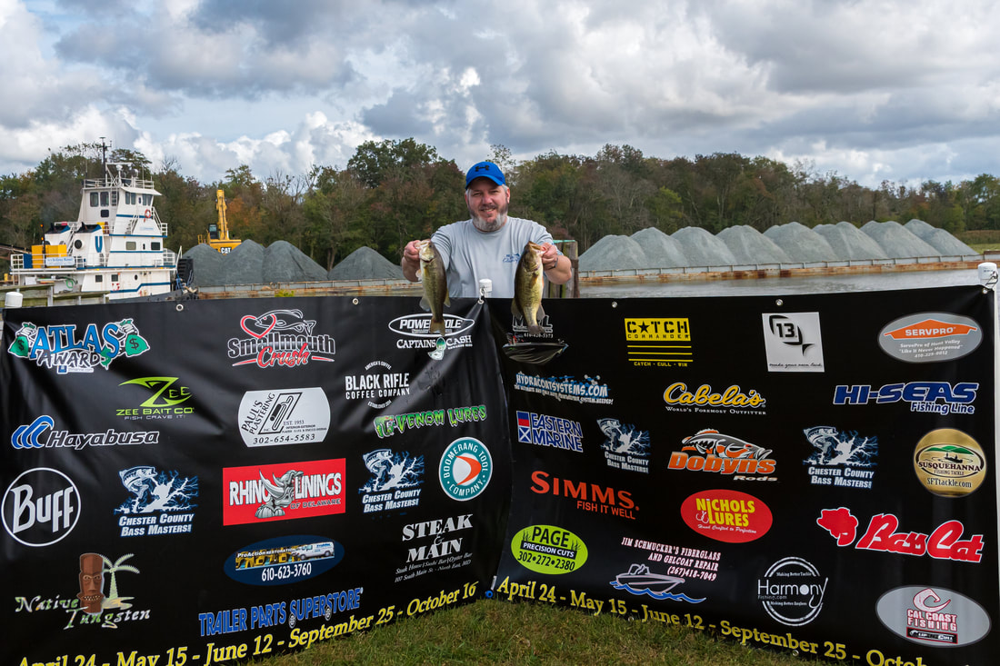
The day started with a quick fish and then hours of grinding until the last hr of the day for Sean Geerlof. He and his rider found a school of smaller fish and after deciding that they needed to find bigger fish they ran to a spot that gave up 3 keepers in 15 mins.
After running back to the ramp, Sean had 90 seconds to fish before the final bell and upgraded his weight with 2 seconds left on the clock. It was enough to get him into the top 3. His bag weighed in at 7.74 lbs.
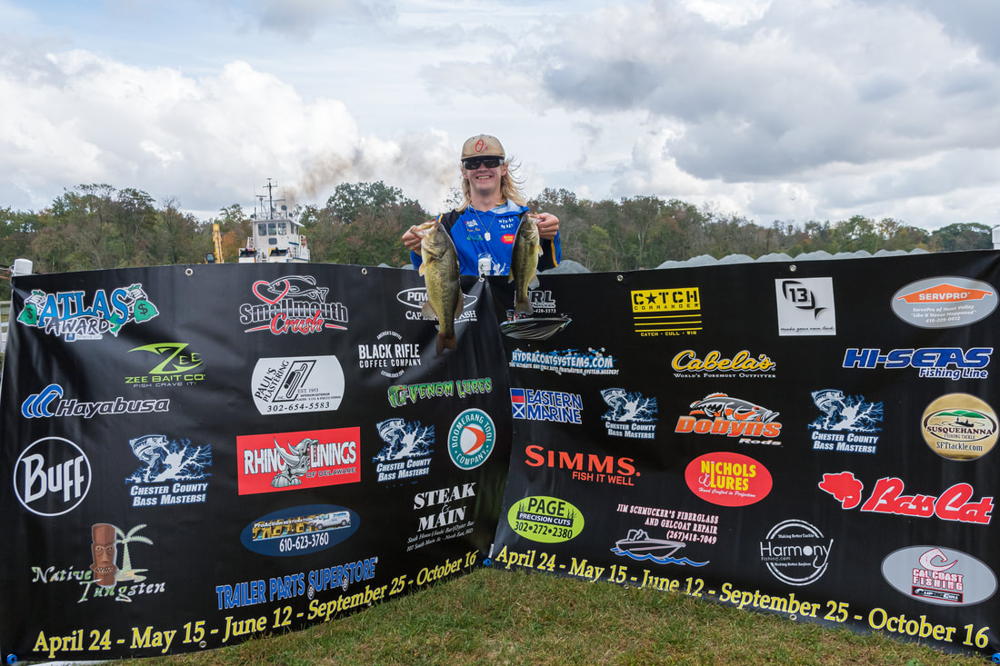
Trevor Nale takes home his first Lunker award as a CCBM member! His bag of only 3 fish gave him a top 5 finish overall, which was anchored by a 4.15 lb Largemouth!!
October 9, 2021
Nanticoke River
- Participants: 22
- Fish Weight: 81.26
- Fish Weighed: 52
- Fish Weight: 1.56
- #Fish/Angler: 2.36
- Wgt/ Angler: 3.69
Total
Total
Total
Avg,
Avg
Avg
CCBM Tournament #11
October 23 , 2021
Conowingo
After looking forward to the Conowingo Smallmouth all season the CCBM show up at the same time the big girls do.
One of our riders does it again with a strong finish on Smallmouth waters.
At 2021 CCBM Rookie catches a slob Smallmouth just to be outdone by another Fattie Smallmouth.
Another 2021 club Rookie comes in to take his best finish of the year and 3rd place points!
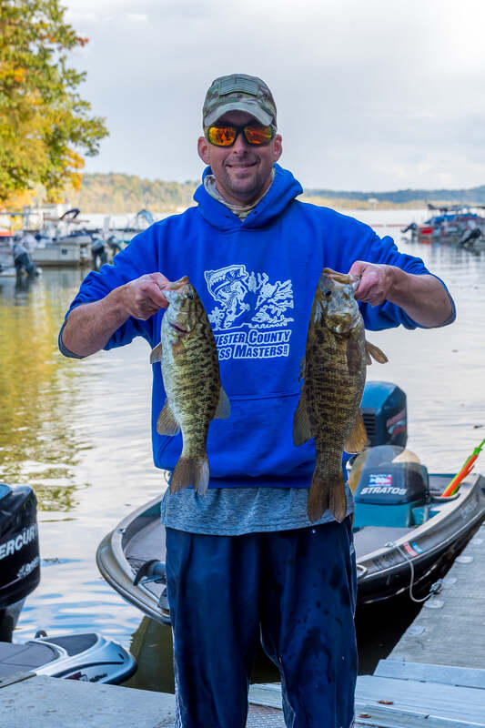
Tom Yaw has been making it a habit out of taking a win from the riders side of the boat for the last few years. This year is not different. Tom brings in the biggest Smallmouth of the tx and the year to give him the Lunker award for the day to go along with his big win!! His bag weighs in at 11.86 lbs which was anchored by a 4.05 kicker fish. This bag puts him into 3rd best all time on this body of water!
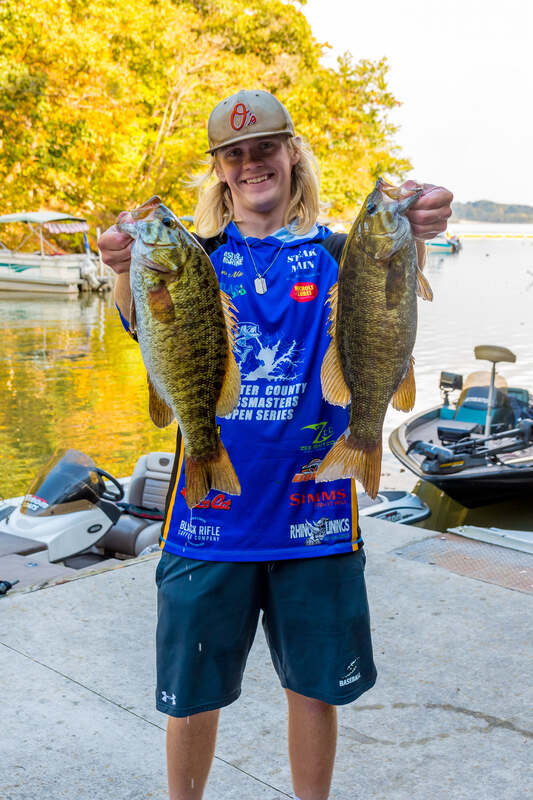
Travis came to the club at the end of the last season and is a great addition to the club. Even though I am sure this season has not stacked up the way he wanted, he can end the season with his best finish of the year with one tx to go. Travis Nale puts 4 nice Smallies in the bot to put him just shy of the win on a beautiful day. His bag of 4 Smallies weigh in at 10.03 lbs with a big fish that weighed 3.5b lbs. His bag puts him in the top 6 bags weighed in on the Conowingo in the last decade.
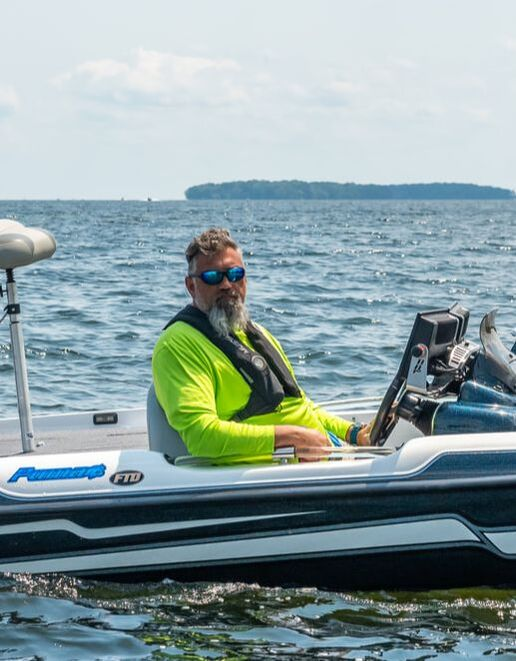
If there is a good time to be had on the water there is a good chance Greg Arrowwood is involved in some way and today was no different. Greg and his guest have a great day on the water boating large Smallies. Greg weighs in 5 fish for 9.14 lbs to take his first top 3 finish since joining the club in the off season.
October 23, 2021
Conowingo
- Participants: 17
- Fish Weight: 69.04
- Fish Weighed: 35
- Fish Weight: 1.56
- #Fish/Angler: 2.06
- Wgt/ Angler: 4.06
Total
Total
Total
Avg,
Avg
Avg
CCBM Tournament #12
November 6th and 7th, 2021
Club 2 day Classic!!!
Nanticoke River and North East River
Usually the Classic goes to an angler who fishes clean and has 2 consistant days and that is what the 2021 AOY did to add another piece of hardware to his trophy case.
The complete opposites rang true for our runner up as he has a huge day 2 to make up for a slow day one on the way to 2nd place points and his first top 3 finish in the AOY race.
Last years Classic Champ has a strong day one and just hold on to take 3rd place .
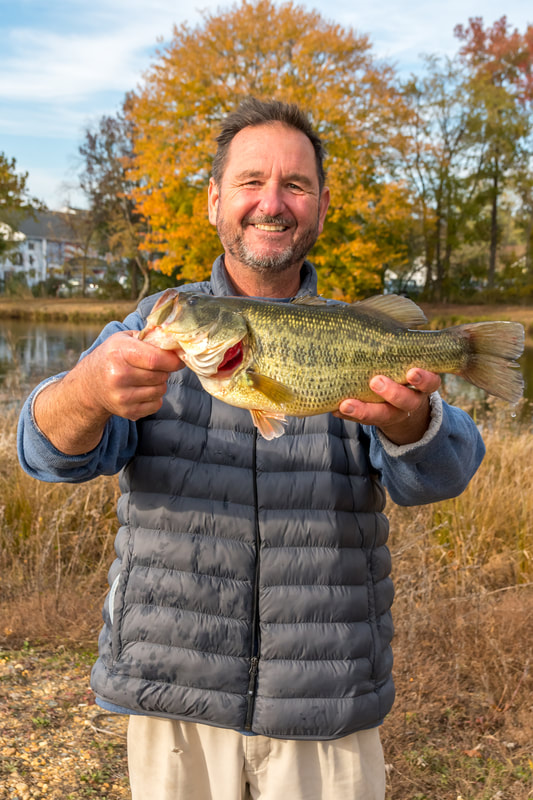
Paul Sirochman finished his rookie year with the club in an unheard of 3rd place in the AOY race and tops himself in hs sophmore year. With 2 tourmants to go Paul locks up AOY for the 2021 season and goes out in our last tx of the year with no pressure and brings home the win.
He was in 5th place going into day 2 and just kept swinging. He weighs in the 2nd largest bag of the day wich was enough to put it away for him and cap an amazing year as Classic Champ! His bag weighed 17.69 lbs and wins by 2.5 lbs!!!
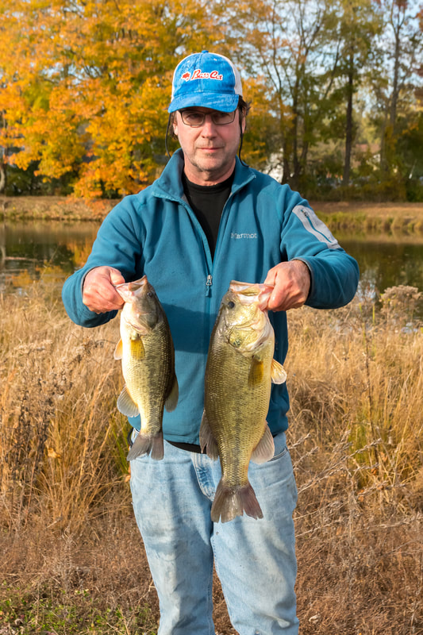
Steve Weimar had his eye on a top 3 AOY finish since joining our club in 2012 and has improved every year since. This year he put it all together and pulled it off. Steve actually finished in a tie for 2nd but due to tie breakers offically puts him in 3rd place for the season. Regardless of that he fished strong this season and earned the respect of a lot of anglers. Can't wait to see how he does next season.
Steve had a off day on the first day of the event on a body of water he knows well but made up for it on day 2 by focusing on the fishing that got him into the top 3 in AOY race. Steve weighed in a bag on day 2 that was bigger than any other angler by 4lbs!!!!!! His total weight of 15.42 lbs which brings him 2nd place points and locked him into the top 3 in the AOY race!!
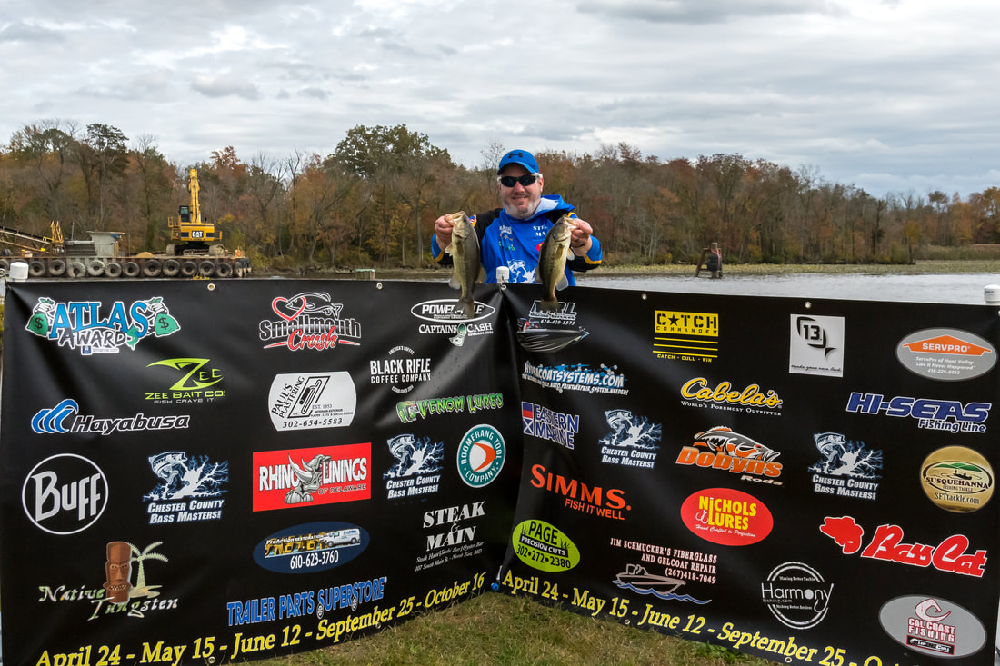
Sean Geerlof had a slow 2nd half to his season and never thought he would be in position to finish in the top 4 in the AOY race. His day 1 bag kept him in the hunt for Classic champ but a sloooooow day 2 for him made him think that even a top 10 finish might be in doubt. The fact that many had a tough day 2 as well kept him in it. The fact that 2 guys brought in strong limits meant that he was no longer in a position to sandbag with the winning fish at the end of the weigh in.
His 2 fish included the txs 4th largest fish. He had enough weight to take 3rd overall and gave him 4th in the AOY race just 2 points out of 2nd. Totl weight went 13.86 lbs with a big fish that weighed in at 3.7lbs
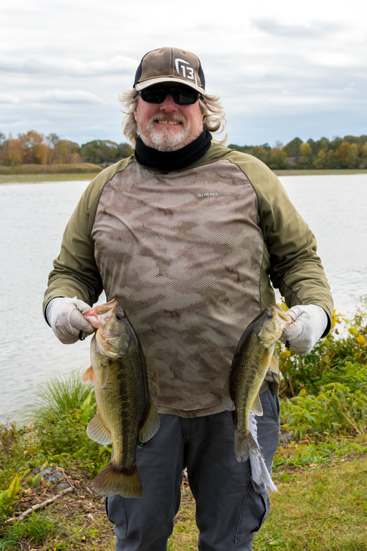
Stan Horne defiantly had the average going for him on day one. If he got 2 more in the boat, it could have meant a top 3 finish at the end of day 2. He weighed in a 3.07 lb Largemouth on day 1 to take home the day 1 Lunker!
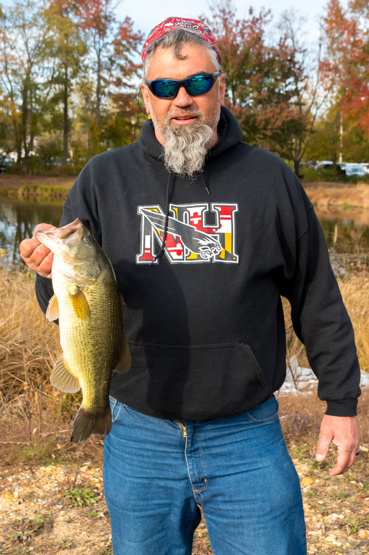
After day 1 Greg started out in 4th place. Thats the good news... Bad news is that he only caught 1 fish on day 2. Even better news is that the fish he caught was a good one. That 3.94 lb Bass gave him the 3rd lunker for the tx and was enough to give him a 5th place finish overall!!
November 6 and 7, 2021
Club Classic
Nanticoke River and North East River
- Day 1 Lunker - Stan: 3.34 lb
- Day 2 Lunker - Steve: 4.53 lb
- 3rd Lunker - Greg: 3.94 lb 4th
- Lunker - Sean: 3.76 lb
- Day 1 Anglers: 23
- Day 2 Anglers: 20
- Day 1 Weight: 96.36
- Day 2 Weight: 54.36
- Total Weight: 150.72
- Day 1 # Fish: 63
- Day 2 # Fish: 25
- Total #Fish: 88
- Avg. fish/angler: 2.74
- Avg. #fish/angler: 1.25
- Day 1 Avg. weight/angler: 4.19
- Day 2 Avg. weight/angler: 2.72
Taken from the old club site as it stood on November 20, 2026 (2021-club-results.html).